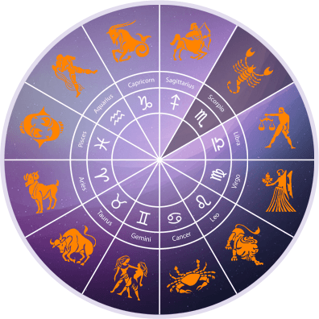

Our little one is expected to arrive November 13, 2016, which would make him a Scorpio! We're excited to find out as much as we can about our little guy, so let's look to the stars for ideas!
The Scorpio child is an old soul in a young body and one look into their eyes will tell you exactly that. They absorb information at an astonishing rate and have a deep understanding of the world way before they can even walk. Scorpio children are competitive beyond their years; love to be the best at what they attempt and No. 1 is where they aspire to be.
Scorpio children love to be around adults, a part of the social and family environment that they are so much a part of. They are curious, adventurous and love nothing better than exploring and conquering their environment answering for themselves many questions to which they just have to have an answer.
They have dreams of climbing mountains, being a great explorer and going where no man has been before and see no reason why they can't do it either. Inventions and other discoveries should be considered when buying the Scorpio child a gift or it will just stay in the corner and gather dust.
The young Scorpio girl will be happy cooking, trying out new things to eat and be at Mum's elbow in the kitchen. Boys, being extremely competitive, will do well in sports that require tenacity and stamina. They need to win at all costs and come out on top of any sporting activity they take on.
The Scorpio child makes an excellent friend, is loyal and focused but does need to be the centre of attention in their peer group. If being chosen as the leader is not forthcoming they will simply move onto another group who will grant them their rightful position (they think) as No. 1.
They are quick and intuitive learners and should be encouraged in subjects that naturally interest them; otherwise they will become bored and just work out the easiest way from A to B as it is not worth their effort to do anything else.
Throughout their teen years it may be difficult to keep them on the straight and narrow as they have a natural predisposition to the darker aspects of life, including drugs, alcohol and other nefarious activities.
A child born under the sign of Scorpio can be secretive, but must be respected for needing time alone and having their own space. In this way they will develop more quickly in a positive way and love you all the more for it.
Scorpio is the eighth sign of the zodiac and closely aligned with body parts such as the urinary tract, reproductive organs and the organs of excretion. These areas are constitutionally weak and susceptible to infection. Other vulnerable body parts are the liver, skin and, by virtue of being the sign opposite Taurus, which rules the throat, the larynx.
Just like your personality, your lifestyle is highly passionate and intense. You often find yourself overworked and anxious, even without trying. This has natural repercussions on your overall wellbeing, and if you're fond of alcohol and cigarettes, the aforementioned body parts will be enormously affected.
Aries rules the head and is in the sixth zone of health and disease from Scorpio. During your younger years, which can be quite challenging and consuming, some Scorpios may suffer recurrent headaches due to stress or suppressed emotions.
On the whole, you're blessed with a robust immune system and resilient recuperative powers, both of which enable you to withstand illness and health hazards. In spite of this, your diet should be rich in calcium, vitamin B and health supplements to boost your overall health.
In terms of daily consumption, vegetables such as asparagus, cauliflower, onions, tomatoes and figs are most advantageous, while black cherries, whole grains, seafood, green salads and nuts are excellent sources of antioxidants.
Mars, being one of your ruling planets, can direct you towards independent but high pressure work and the military or police service would fit you well. With the vitality of the Sun ruling your professional destiny, you will shine just as brightly no matter what career you choose.
Scorpios are excellent at healing professions and particularly those that will involve the intuitive part of your nature as well. Investigating and research are interesting to Virgos and you'd make an excellent analyst or strategist, especially given your hard-working nature and dedication to a job.
You love power so other professions that may suit you well are insurance, banking, investing, stock broking, market analyst, and astrologer or psychic adviser.
Jupiter holds sway over your finances and the speculative sector of your horoscope so the stock market may be of interest to you and you should do well through investments of this nature.
You are extremely hard working, whether as an employer or employee, and loyalty and hard work are characteristic of your sign. You are self-motivated, imaginative, a problem solver and you know how to use your intuition to improve your workplace and the systems being used, sometimes much to the amazement of your colleagues.
You are a highly motivated person, so generally, when it comes to any type of work, you are capable enough to know what's expected of you and do your work in a skilful and timely manner. You are also punctual, like to maintain an orderly approach to your tasks, and have a way of developing systems that seem to make you highly efficient. In fact, you are more efficient than many of the people around you.
You are the type of person who sets objectives—short-, medium- and long-term goals—by which you measure your success.Being tenacious, you also hate to waste time and don't like to get too involved in the social gossip that may be part of your workplace environment. Your objectivity can put others' noses out of place, but this doesn't bother you because you are totally focused on achieving your aims.
You are disliked by those who see your high output as a threat to their easygoing and perhaps somewhat lazy nature. For this reason it's some- times best for you to hide your talents and not always show what you're capable of. In this way you won't create too many enemies around you.
You are fearless, inventive and are not scared to take a risk. Courage is one of your greatest assets and therefore, unlike most, you're not scared to move somewhere else if the current situation you find yourself in does not satisfy you or you feel as if it's a dead-end for your overall career objectives.
Just as I mentioned that loyalty is at the heart of the Scorpio boss, you, too, being a Scorpio employee, are extremely loyal. If the situation offers you the right sort of growth path for your career, you'll stand by your employers and the people with whom you work.
Money is an extremely important aspect of your work and you do tend to measure your successes by the cash that you acquire. You have a brilliant mind but coupled with your shrewd, logical and intuitive sense, you are an incredibly gifted worker and employers are quick to note this.
With work colleagues, you demand respect and are quick to retaliate if someone insults you or if they question your ability or, more importantly, your integrity. If you perceive an injustice, you are likely to 'step up to the plate' and voice your opposition, even if this means experiencing an adverse reaction. You are certainly a person of high principles.
Scorpio loves researching and doing a job well. They are also independent and take the initiative in work. Don't obstruct them, however, or you could risk their sarcastic vengeance.